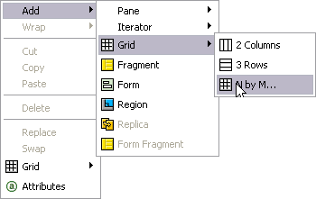
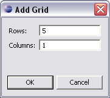
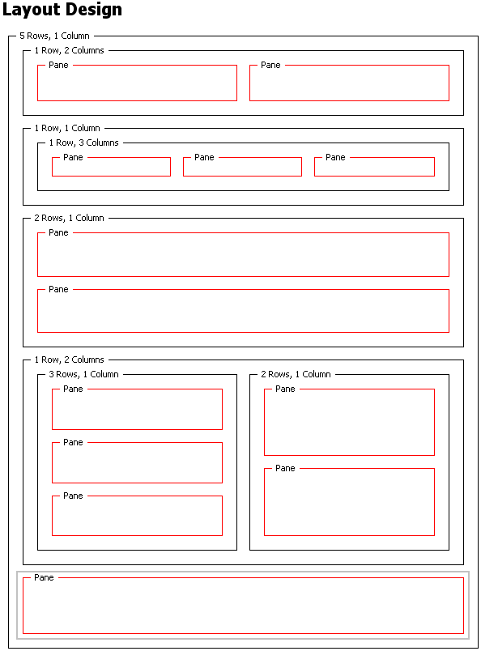
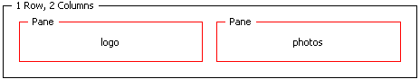
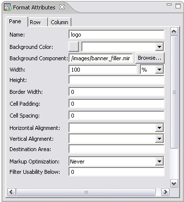

PC home page layout
In the previous step you added the basic layout policy for the Jive home page. In this module
you will a specific layout for the PC version of the page, and add format attributes that will
bind the layout to your XDIMe2 content.
When designing a layout you start with a grid structure that defines the skeleton of the
page. Next, you add elements such as panes, that hold targeted content of the XDIME 2 page.
Note: If you have not copied the remaining image components to your project, you
should do so now. You will need them for this module.
Using grids 
Grids give a device layout a basic structure for your content. You can nest grids inside one
another, and also wrap one grid element in another.
- Make sure the jivehome.mlyt layout is opened in the Layout editor
- Pick the 'Targeted, PC' variant in the list of variants and switch to page by clicking on
the tab at the bottom of the window, to display a single empty layout cell
- Right click in the empty cell area and choose Add |
Grid | N by M to open the Add Grid dialog

- Enter values for 5 rows and 1 column for the home page and click OK.
There are now empty cells for each row.

- In the top row add 2 columns to hold the page header and logo images
- In the second row , first nest a single row, and inside it, create 3 columns to hold the
menu section buttons
- In the third row add 2 columns to contain the stock price and page title
- In row four add 2 columns. In the left-hand side column nest 3 rows , and on the
right-hand side add 2 rows. The Announcements and News sections will be placed here.
- Leave the bottom row of the main grid untouched for now. It will hold a footer.
- Your final grid structure should look like the one below

Adding a format
MCS displays XDIME content in individual panes, which need to have a unique names within the
layout. In the content, you use the pane names to specify where output from XDIME elements
appears.
- In the top row of the grid, right click on the left-hand cell, and choose
Add | Pane | Pane. The added pane is
highlighted in red. If it is not already visible, MCS displays the Format Attributes view.
- With this pane selected in the page, set the Name control in the
Format Attributes view to 'logo'. On the page the name is displayed.

- Click Browse next to the Background component
control, and select the image component images/banner_filler.mimg in the
Component Selection dialog. This dialog shows only those components in the
mcs-policies folder.
- Continue to add the attributes for this pane, and create panes and attribute values for
the remaining cells in the grid that are summarized in the Completion section below

Checklist
These are the format attribute values that you need to set for the panes in the PC page
layout.
The 'Markup Optimaization' and 'Filter Useability Below' attributes must be set to 'Never' and
'0" for all panes.
| Name | Background Component | Width | Border Width | Cell Padding | Cell Spacing | Horizontal Alignment | Vertical Alignment |
|---|
| logo | /images/banner_filler.mimg | 100% | 0 | 0 | 0 | | |
|---|
| photos | Right | |
|---|
| stockprice | /images/orange_gradient.mimg | Top |
|---|
| title | Left | |
|---|
| announcements | | Left | Top |
|---|
| human_resources | |
|---|
| from_CEO | |
|---|
| global_news | |
|---|
| US_news | |
|---|
| footer | |
|---|
| menu_company_news | /images/repeater.mimg | 33% | Center | Top |
|---|
| menu_human_resources |
|---|
| menu_employee_store |
|---|